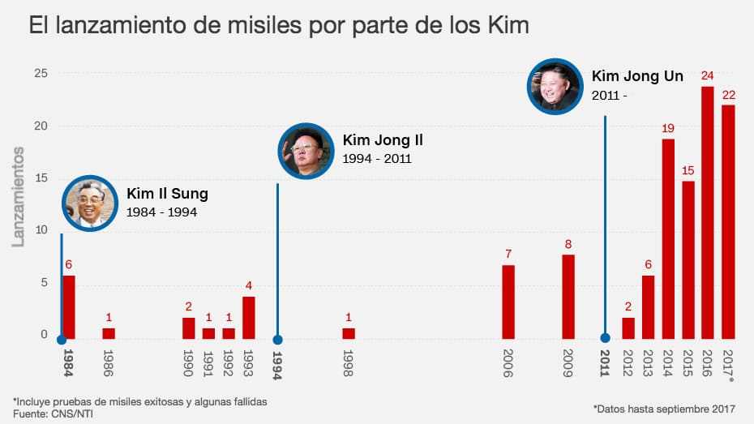
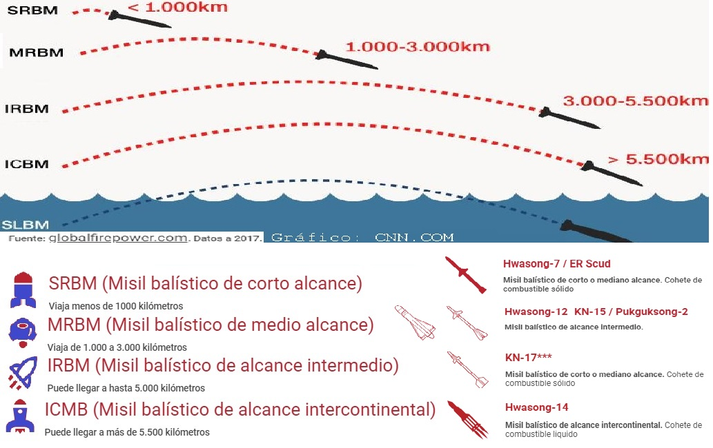

Kim Yong Un, hijo del fallecido Kim Yong Il, es sin duda el lider Norcoreano que ha desarrollado con más fuerza el programa nuclear y ha puesto el foco internacional en su régimen. En el gráfico siguiente se pude observar los ancestros de Kim y el numero de lanzamientos durante las últimas cuatro decadas.

Con solo dos pruebas nucleares en el régimen anterior, la diferencia ha sido notoria

 At the beginning of 2017 the escalation of nuclear tests began to cause concern in the international community. The North Korean leader has increased the budget of his country in defense spending with respect to his predecessor, having put the focus on getting to equip his country with nuclear power. And is that the number of launches has doubled in the last two years and the tests have begun to reach alarming parameters as can be seen in the following figure:
At the beginning of 2017 the escalation of nuclear tests began to cause concern in the international community. The North Korean leader has increased the budget of his country in defense spending with respect to his predecessor, having put the focus on getting to equip his country with nuclear power. And is that the number of launches has doubled in the last two years and the tests have begun to reach alarming parameters as can be seen in the following figure:
The year 2017 will be remembered without a doubt for achieving two important milestones, such as the nuclear capacity of its bombs, having increased its destructive capacity by more than double the previous year and the range of its missiles having enough power to reach Alaska and the West Coast. These tests that have been carried out without warning to its neighbors having violated several international agreements have put in check countries like China for their historical support to the North Korean regime. Japan has seen for the second time in history the fear of a nuclear war when in July a North Korean rocket flew over the country apparently without any cargo on top. These launches have alarmed their neighbors South Korea, the eternal enemy and Japan.
 The regime claims that these alleged tests respond to the continued operations of the United States in Korea. On the right you can see an image of the supposed operations in which a good part of its fleet participates, since it has deployed 3 aircraft carriers in the area and about 5000 men. And so in November, the North Korean leader would threaten the United States with an alleged attack on Guam, the island of the United States closest to the Korean peninsula. Trump responded with a threat of a fire on his country never seen in history.
The regime claims that these alleged tests respond to the continued operations of the United States in Korea. On the right you can see an image of the supposed operations in which a good part of its fleet participates, since it has deployed 3 aircraft carriers in the area and about 5000 men. And so in November, the North Korean leader would threaten the United States with an alleged attack on Guam, the island of the United States closest to the Korean peninsula. Trump responded with a threat of a fire on his country never seen in history.
On September 3, Korea would conduct a nuclear test, which also affirmed that it had managed to miniaturize the bomb. The pump of Korea with hydrogen technology would have a destruction power of 70 kilotons, 4 times higher than those that the USA launched against Japan in the Second World War. It could also be coupled to a ballistic missile like the one launched on July 29. North Korea also claimed to be able to produce warheads from this chain model.
With all this, the reaction of the markets did not wait at all, producing generalized decreases in the indexes and a resurgence of appreciation of the precious metals before any intervention by the United States. However shortly after this trial and before the march of time, this rebound of gold was softening to levels somewhat normal for this year, the 1250 would climb again to the verbal threat of the North Korean leader.
In the following graph you can see how these events triggered a fear in the world economy that had not been seen since the Brexit. It is quite paradoxical that when the world economy is at a better level with the United States and interest rates are rising steadily, gold will suffer these increases. Beginning in November, another wave of threats would begin with some missile launches that made the gold thermometer rise again.
The following chart shows the behavior of gold against the different events related to North Korea's attitude. There is almost a 15% increase in gold only due to these events, which is very big since in the mining companies the figure of increase would reach almost 50% of revaluation.
The types of missiles and their scope are as follows:

 The second graph shows the relationship of one of the most important ETFs correlated with the price of gold.
The second graph shows the relationship of one of the most important ETFs correlated with the price of gold.

© 2016 - All Rights Reserved - Diseñada por Sergio López Martínez
![[Valid RSS]](https://www.feedvalidator.org/images/valid-rss-rogers.png "Validate my RSS feed")